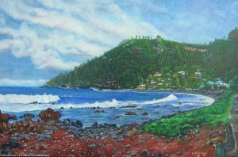

La peinture, belles images de la Réunion
Au cours de l'été 1998, j'ai déjà parlé de l'UDAR, association de peintres, sculpteurs et photographes pour la promotion et le développement des Arts Plastiques à la Réunion.
Leur site web est depuis classé parmi ceux des collectifs artistiques de la Réunion. Depuis 8 ans, l'Union Des Artistes de la Réunion a grandit mais le site de l'association na pas beaucoup évolué. Les quelques cinquante membres supplémentaires de l'UDAR ne sont pas présent sur leur ancien site mais se retrouvent listés sur leur nouveau blog.

La Baie de Manapany par Pierre-Paul Bellemene
Pierre-Paul Bellemene, portraitiste membre de l'UDAR, a réagit à mon article sur
les
blogs réunionnais et m'a montré que les artistes réunionnais
avaient eux aussi investit la blogosphère. L'UDAR, réalise ainsi des
compte-rendus des expositions (comme ce carrefour des arts
2006) ayant lieu partout sur l'île. Beaucoup
d'autres plasticiens de l'association ont eux aussi ouvert un blog
pour exposer leur toiles sur le web. Je me vois aujourd'hui contraint
d'ouvrir une catégorie blogs d'artistes pour que vous
puissiez les visiter à loisir. C'est maintenant à vous de les découvrir :
Liste des artistes de l'UDAR
- ADENOR Alex
- AH-KEN Pierrette
- ALIBERT Danielle
- APRIL Maud
- AUBRY-VAIANI Edwige
- AUTIER LUCAN Jacqueline
- BALTZ Alain
- BARRET Micheline
- BEGUIN-QUENTIN Muguette
- BELLEMENE Pierre-Paul
- BERTRAND Eric
- BOITEAU Michelle
- BOULAIN Christiane
- BOYER Nelson
- CADET Christian
- CANOT Jean
- CASTELNAU Henri
- CAUDOU Seren
- CAUMES Jean-Pierre
- CHADIM Françoise
- CONAN Yanig
- COURTOIS Josiane
- DE BOISVILLIERs Marlène
- DECAMME Myriam
- DEDRICHE-TOTAL Michèle
- DENEQUE Paule
- DIEUDONNE Georges
- DIJOUX Dominique
- DOUSSINEAU Claude
- GEREONE Jean-Paul
- GIAMBRONE Arlette
- GONFOND Stéphanie
- GOUBET Rachell
- GROS Christine
- GUEGAN-MULON Gisèle
- GUENIOT Pierre
- HARVEL-RODIONOFF Irène
- HOAREAU Charles-Henri
- HOAREAU Tristan
- HOUOT TULLIO Odile
- HUET Jean-Fred
- IFANOHIZA Jean-Bernard
- KELLY Philip
- LADRIERE Frédérique
- LAJOINIE Bruno
- LAPORTE Danielle
- LEBON Micheline
- LOUIS Serge
- MANES Gilbert
- MARION Aparna
- MARY Irène
- MITAULT-NOUVEL Dominique
- MOREAU Josiane
- NATIVEL Michel
- PALOC Eve
- PAYET Marie-line
- PAYET Wilfrid
- PERCHERON Lydia
- PETERS Emmanuelle
- PHILIBERT Alain
- RIEGEL Léon
- RIVIERE Gérard
- ROBERT Katy
- RYBKA Marc
- SABBAN Lidia
- SCACCO Bruno
- SCHELLAH Karim
- SCHWAB Michel
- SIDA Serge
- SITAYA Athanase
- TERRENTROY Eric
- VAYSSE Francine
- VELOUPOULE Dévi
- VERAN Noëlle
- VERGOZ-THIREL Sabine
- VIDOT Marie-Claude
- WEBER Richard